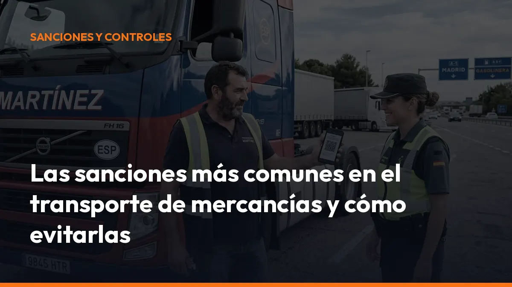

Las sanciones más comunes en el transporte de mercancías y cómo evitarlas

La buena noticia: muchas sanciones en transporte son evitables con una gestión previa adecuada.
Revisa la documentación. Comprueba el vehículo. Verifica la carga. Deja todo preparado antes de salir.
¿Cuánto puedes pagar por una sanción de transporte?
El baremo sancionador de la LOTT contempla multas que pueden situarse, según la infracción, la gravedad y la reincidencia, desde 100 € hasta 20.001 €.
La cantidad final depende de factores como:
- Tipo de infracción: leve, grave o muy grave.
- Riesgo creado: especialmente importante en ADR, estiba y seguridad vial.
- Reincidencia: repetir una conducta aumenta la sanción y sus consecuencias.
- Responsabilidad: puede afectar al conductor, al transportista, al cargador o al gestor.
- Medidas accesorias: inmovilización, pérdida de honorabilidad o suspensión de autorizaciones.
No esperes a recibir un acta para revisar tu operativa. Actúa antes de que el vehículo salga a carretera.
1. Tacógrafo: una de las principales fuentes de sanciones
El tacógrafo sigue siendo uno de los puntos más controlados en el transporte de mercancías. Los errores no siempre proceden de una manipulación intencionada. Muchas sanciones nacen de una descarga incorrecta, una tarjeta mal utilizada o una planificación deficiente de la ruta.
Las infracciones más habituales
- Exceso de conducción: superar los tiempos máximos diarios o semanales.
- Descansos insuficientes: no respetar los descansos diarios o semanales.
- Tarjeta incorrecta: conducir sin tarjeta, usar una tarjeta de otra persona o llevarla caducada.
- Entradas manuales incompletas: no justificar correctamente actividades distintas de la conducción.
- Descarga defectuosa: no conservar o no presentar los datos cuando lo solicita la inspección.
- Manipulación: utilizar imanes, dispositivos o sistemas que alteren los registros.
La manipulación del tacógrafo es especialmente grave. Puede generar una multa elevada, inmovilización y consecuencias sobre la honorabilidad del transportista.
Cómo evitarlo
Planifica los tiempos antes de asignar una ruta. Descarga los datos dentro de los plazos establecidos. Revisa las incidencias y forma al conductor para que sepa realizar las entradas manuales correctamente.
Incluye una revisión periódica dentro de tu sistema de gestión documental para transporte. Detectar una incidencia antes de un control siempre cuesta menos que corregirla después.
2. Documentación incompleta: el error que más se repite
La documentación debe estar disponible, correctamente cumplimentada y ser coherente con el servicio realizado. Un dato incorrecto puede ser suficiente para iniciar un expediente sancionador. Entre los fallos más frecuentes están:
- Documento de control inexistente.
- Datos esenciales incompletos.
- Matrícula incorrecta.
- Origen o destino que no coincide con la operación.
- Mercancía descrita de forma imprecisa.
- Falta de datos del cargador o del transportista.
- Autorización de transporte no adecuada o no vigente.
- Carta de porte o documentación ADR incompleta.
Atención al DeCA desde el 5 de octubre de 2026
A partir del 5 de octubre de 2026, el Documento de Control Administrativo deberá utilizarse en formato electrónico en las operaciones sujetas a esta obligación. El papel dejará de ser la opción válida para estos servicios.
El DeCA debe generarse correctamente y estar disponible para su comprobación durante el trayecto. No basta con tener una fotografía de un documento antiguo o un archivo ilegible en el móvil.
Comprueba que tu sistema permite:
- Generación antes del servicio: crea el documento antes de iniciar la ruta.
- Datos completos: incluye remitente, transportista, origen, destino y mercancía.
- Acceso inmediato: permite mostrarlo durante un control.
- Archivo organizado: conserva los documentos para futuras comprobaciones.
- Trazabilidad: relaciona cada documento con el envío correspondiente.
La ausencia, el incorrecto diligenciado o la falta de datos esenciales puede considerarse una infracción grave, habitualmente con sanciones de varios cientos de euros por envío. El falseamiento de la información puede tener consecuencias mucho más elevadas.
No esperes al 5 de octubre. Empieza a preparar tu documentación digital y reduce el riesgo desde hoy.
3. Estiba y sobrecarga: seguridad antes de empezar
Una carga mal colocada puede desplazarse, caer o alterar la estabilidad del vehículo. Por eso, los controles prestan especial atención a la masa, la distribución y los sistemas de sujeción.
Fallos habituales en estiba
- Exceso de masa máxima autorizada.
- Carga distribuida de forma incorrecta.
- Ausencia de cinchas, calzos o elementos de sujeción.
- Cinchas deterioradas o insuficientes.
- Palés inestables.
- Mercancía desplazada durante el trayecto.
- Puertas, lonas o cierres que no garantizan la seguridad.
La sanción puede aumentar cuando la estiba genera un riesgo directo para otros usuarios de la vía. Además, si la carga presenta un peligro evidente, los agentes pueden ordenar la inmovilización del vehículo hasta corregir la situación.
Cómo prevenir la sanción
Antes de salir, comprueba:
1. La masa total y la distribución por ejes. 2. El estado de las cinchas y los puntos de anclaje. 3. La estabilidad de palés, cajas y bultos. 4. La protección de mercancías frágiles o peligrosas. 5. Que la carga no pueda desplazarse, caer o abrir las puertas.
Utiliza una lista de comprobación y deja constancia de la revisión. Una inspección de dos minutos puede evitar horas de inmovilización y una pérdida económica mucho mayor.
4. ADR: errores de identificación, señalización y equipos
El transporte de mercancías peligrosas exige un control documental y operativo más estricto. En ADR, un error aparentemente pequeño puede crear un riesgo real y provocar una sanción elevada.
Los fallos más comunes en controles ADR
- Número ONU incorrecto o incompleto.
- Clase de peligro mal indicada.
- Grupo de embalaje erróneo.
- Carta de porte ADR incompleta.
- Paneles naranjas ausentes o incorrectos.
- Rombos o etiquetas que no coinciden con la mercancía.
- Señalización incoherente entre vehículo, envase y documentación.
- Instrucciones escritas no disponibles.
- Certificado ADR del conductor no válido o insuficiente.
- Extintores o equipos obligatorios ausentes.
- EPIs incompletos o deteriorados.
- Estiba deficiente de bultos peligrosos.
- Fugas, daños en envases o embalajes no homologados.
La incoherencia entre el número ONU, la clase, la carta de porte y los paneles de señalización es uno de los errores más fáciles de detectar. Antes de cargar, compara todos los datos.
La inmovilización puede ser inmediata
Cuando existe un riesgo elevado para las personas, el medioambiente o la seguridad vial, el vehículo puede quedar inmovilizado hasta que desaparezca el motivo de la infracción.
Esto puede ocurrir por:
- Fugas o daños graves en los envases.
- Mercancía prohibida o transportada en un medio no autorizado.
- Señalización esencial inexistente.
- Equipamiento de seguridad insuficiente.
- Documentación que impide identificar correctamente la mercancía.
- Falta del consejero de seguridad cuando resulte obligatorio.
Las multas ADR pueden alcanzar importes elevados dentro del baremo aplicable. Además, tendrás que asumir los costes derivados de la inmovilización, el traslado y la custodia del vehículo.
5. Autorizaciones, restricciones y requisitos del conductor
También se sanciona circular sin la autorización adecuada, incumplir restricciones de tráfico o trabajar con conductores que no cumplen los requisitos exigibles.
Revisa siempre:
- Tarjeta o autorización de transporte: debe estar vigente y corresponder al servicio.
- CAP: comprueba que la cualificación del conductor está en vigor.
- Permiso de conducción: verifica categoría y fechas.
- ADR: confirma la habilitación para la clase de mercancía transportada.
- ITV y condiciones técnicas: evita circular con defectos relevantes.
- Restricciones de tráfico: consulta horarios, tramos y calendarios aplicables.
- Seguro y documentación del vehículo: mantenlos actualizados y accesibles.
Un error administrativo puede detener una operación completa. Centraliza la información y establece alertas para renovaciones, caducidades y revisiones.
¿Qué es la pérdida de honorabilidad?
La honorabilidad es un requisito esencial para ejercer la actividad de transporte. Las infracciones muy graves y la acumulación de infracciones pueden provocar una evaluación negativa de la empresa o del gestor de transporte.
Las conductas más sensibles incluyen:
- Manipulación del tacógrafo.
- Falsificación de documentos o registros.
- Incumplimientos graves y reiterados de tiempos de conducción.
- Infracciones ADR de alto riesgo.
- Excesos importantes de carga.
- Problemas repetidos con autorizaciones o formación.
- Deficiencias graves y continuadas en seguridad.
Perder la honorabilidad no significa únicamente pagar una multa. Puede comprometer la continuidad de la autorización y la capacidad de seguir operando.
Tu checklist de prevención en cinco minutos
Antes de iniciar cada servicio, confirma:
- Documentación: DeCA, carta de porte y autorizaciones disponibles.
- Tacógrafo: tarjeta correcta, actividad registrada y tiempos planificados.
- Carga: masa, distribución y sujeción revisadas.
- ADR: número ONU, clase, etiquetas, paneles, EPIs y equipos comprobados.
- Vehículo: estado técnico, ITV, seguro y elementos obligatorios.
- Conductor: CAP, permiso y formación adecuada.
- Ruta: restricciones, zonas de acceso y horarios verificados.
Después, archiva la documentación y registra cualquier incidencia. La prevención funciona cuando se convierte en un proceso repetible, no cuando depende de la memoria del conductor.
Convierte el cumplimiento en una rutina sencilla
El transport compliance no consiste en acumular papeles. Consiste en tener la información correcta, en el momento correcto y disponible desde cualquier lugar: oficina, móvil, carretera o control.
Con Mi Carga puedes organizar la documentación digital del transporte y reducir tareas manuales. Consulta nuestras opciones de suscripción o solicita información para adaptar la solución a tu empresa.
Más control. Menos errores. Menos sanciones.
Empieza hoy a revisar tu operativa. El próximo control puede producirse en cualquier ruta.
Fuentes normativas y de consulta
- Baremo sancionador del transporte terrestre – Ministerio de Transportes
- Ley de Ordenación de los Transportes Terrestres – BOE
- Resolución sobre el Documento de Control Administrativo electrónico
- Real Decreto 97/2014 sobre transporte de mercancías peligrosas por carretera
- Real Decreto 1566/1999 sobre consejeros de seguridad
Genera tus 10 primeros documentos gratis con Mi Carga
DeCA, carta de porte y ADR, en PDF, con QR y archivo automático en la nube.
Empezar con 10 documentos gratisArtículo informativo. Consulta siempre el caso concreto de tu operación. ¿Dudas? Escríbenos.